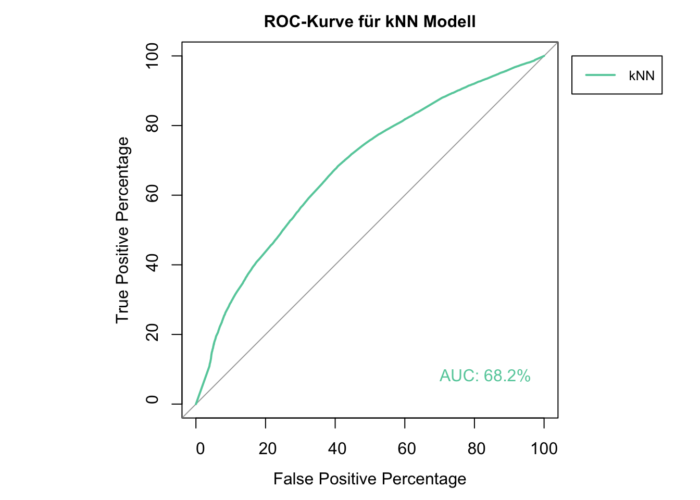
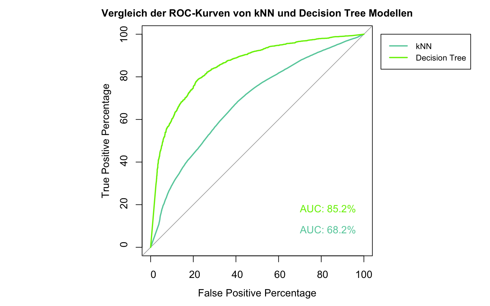
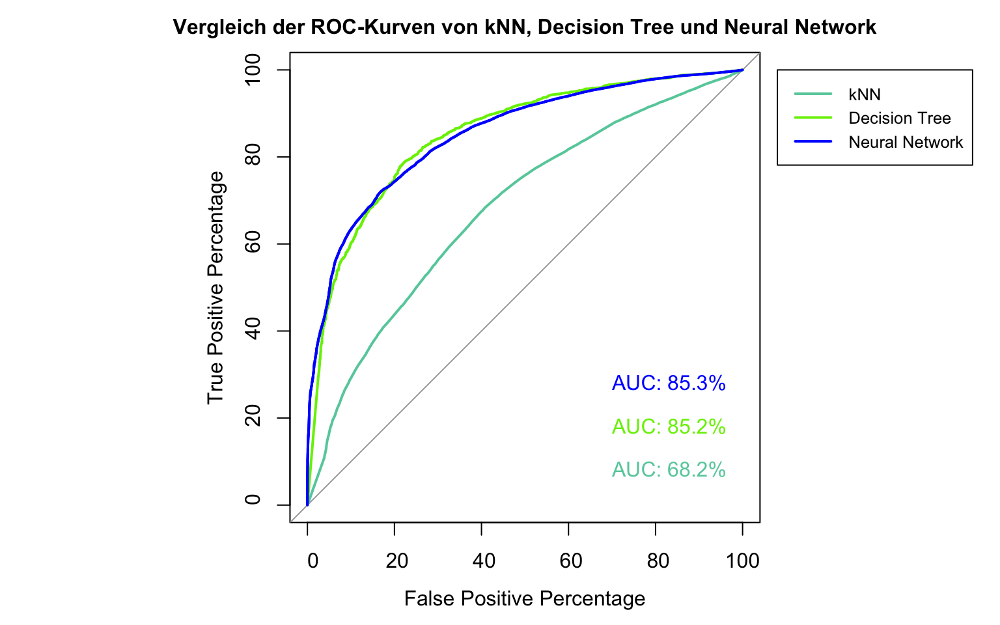
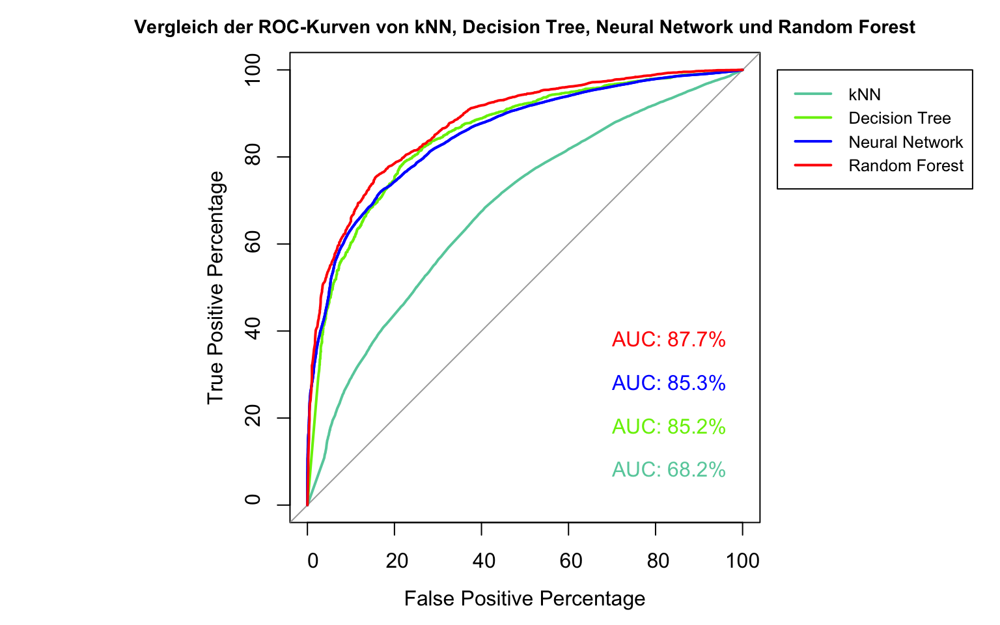

Predictive Machine Learning with Spotify Data
2022-01-03
Vorwort
Über die API von Spotify lassen sich die unterschiedlichsten Daten über Songs, Alben, Playlisten und Künstler abgreifen. Neben typischen Metadaten wie dem Erscheinungsdatum, Künstlernamen oder den Ländern, in denen ein Song verfügbar ist, umfasst dies unter Anderem die Ergebnisse der Audio-Analysen, die Spotify für jeden Song automatisiert anfertigt. Wie gut sich diese Daten dazu eignen, mit gängigen Machine Learning Methoden die persönliche Präferenz eines Songs hervorzusagen, wird in diesem Projekt erprobt.
Dazu habe ich zunächst einen Datensatz von ~1500 Songs erstellt, von denen ich ~1000 Songs als positiv und 500 Songs als negativ bewertet gekennzeichnet habe. Anhand von einer kleinen Auswahl weit verbreiteter, gängiger Methoden des Machine Learning, werde ich untersuchen, wie gut sich diese Daten klassifizieren lassen.
Nach einer kurzen Übersicht zu den Grundlagen dieses Projektes, wird die Erstellung des Datensatzes über die Spotify API dargestellt. Die zuvor ausgewählten Machine Learning Methoden werden dann in je einem Kapitel vereinfacht erläutert, erprobt und evaluiert.
Da es sich bei diesem Projekt lediglich um eine Erprobung und Annäherung zu Methoden des Machine Learning handelt, wurde an vielen Stellen auf ausführlichere Theorie verzichtet.
1 Grundlagen
Machine Learning (Maschinelles Lernen) findet sich in den unterschiedlichsten Branchen und wissenschaftlichen Disziplinen wieder und beschäftigt sich im Kern damit, Informationen durch Algorithmen in anwendbares Wissen umzuwandeln. Als Teilbereich des Gebietes der Artificial Intelligence (Künstliche Intelligenz) umfasst Machine Learning statistische Techniken, um Rückschlüsse auf spezielle Strukturen und Verbindungen in den vorliegenden Daten zu ziehen und gewonnene Erkenntnisse auf neue oder zukünftige Daten anzuwenden.
Dabei unterscheidet man zwischen Supervised Learning (überwachtes Lernen) und Unsupervised Learning (unüberwachtes Lernen). Supervised Learning dient dazu, ein Model durch bereits vorliegenden Daten zu generieren, welches anschließend Vorhersagen für neue Daten treffen kann, beispielsweise zur Klassifizierung bestimmter Merkmale. Unsupervised Learning ist hingegen eine Technik, um verborgene Muster oder Gruppen in den vorliegenden Daten zu erkennen.
In diesem Projekt werden wir Techniken des Supervised Learning anwenden. Wir werden also basierend auf den bereits vorliegenden Daten verschiedene Modelle generieren, um die Klassen zukünftiger Daten hervorzusagen. Um zukünftige Daten zu simulieren, unterteilt man die vorliegenden Daten in einen Trainings- und einen Testdatensatz. Dabei wird der Trainingsdatensatz genutzt, um das Modell anzulernen. Anschließend wird das Modell auf den Testdatensatz angewendet, um die Genauigkeit der Hervorsagen an Fällen zu testen, die das Modell zuvor nicht gesehen hat.
1.1 Testverfahren / Kreuzvalidierung
Zur Bestimmung der Qualität eines Modells ist es unerlässlich dieses an unbekannten / zukünftigen Daten zu testen. Teilt man die vorliegenden Daten jedoch nur in jeweils einen einzelnen Trainings- und Testdatensatz, können die statistischen Kennzahlen des Modells unter Umständen zu stark davon beeinflusst werden, in welchen Proportionen die unterschiedlichen Klassen in den beiden Datensätzen vorliegen. Dies ist vor allem bei kleineren Stichproben, bzw. Stichproben, in denen eine bestimmte Klasse nur in geringer Proportion vertreten ist, von Bedeutung.
Um dieses Problem zu lösen, bieten sich verschiedene Verfahren wie zum Beispiel die Kreuzvalidierung (Cross-Valildation) an, welche wir hier verwenden werden.
Bei der Kreuzvalidierung, auch genannt k-fold cross-validation / k-fold CV, werden die Daten zunächst zufällig sortiert und dann in gleichgroße Teilmengen, die sogenannten folds, der Anzahl k unterteilt. Anschließend werden k Modelle erstellt, bei denen jeweils eine andere dieser Teilmengen als Testmenge verwendet wird (Kohavi, 1995). Jedes Modell wird dann anhand der Performance beim Vorhersagen der Testmenge evaluiert und die über alle Testmengen hinweg durchschnittliche Fehler- oder Erfolgsquote errechnet. Folglich werden also k-verschiedene Trainings- und Testdatensätze erstellt.
Wir werden mittels Kreuzvalidierung für jede Machine Learning Technik die wir untersuchen, 10 Modelle geniereren, wobei jedes Mal andere Teilmengen unserer vorliegenden Daten für das Training und Testen des Modells genutzt werden. Bei dieser 10-fold CV werden somit für 10 verschiedene Modelle jeweils 90% der Daten für das Training und 10% für das Testing verwendet, wobei es zu 10 verschiedenen Kombinationen aus Trainings- und Testmengen kommt.
1.2 Optimierung
Im Folgenden werden wir für jede zu untersuchende Technik zunächst ein einfaches Modell durch die train() Funktion aus dem Package caret erstellen. Für diese Techniken gibt es jedoch immer spezifische Parameter, die dazu genutzt werden können, das Modell zu optimieren. caret ermöglicht es uns eine Liste an Parametern, die wir erproben möchten, automatisiert für die Generierung der jeweiligen Modelle anzuwenden, die entsprechende Ergebnisse anzuzeigen und das Modell mit der besten Performance zu identifizieren. Welche Kennzahlen für die Ermittlung des Modells mit der besten Performance verwendet werden, können wir selbst festlegen. Je nach Anwendungsfall bieten sich Kennzahlen wie Accuracy, Kappa, die AUC(Area under the curve der ROC Kurve) oder Weitere an.
Da es in unserem Fall um die Vorhersage von durch uns positiv oder negativ bewerteten Songs auf Spotify geht und wir uns an dieser Stelle noch nicht im Detail damit auseinander setzen, in welchem Verhältnis wir bei der korrekten Vorhersage von positiven Fällen die falsche Vorhersage negativer Fälle in Kauf nehmen möchten, werden wir die AUC (Area under the curve), also die Fläche unter der Receiver Operating Characteristic (ROC) Kurve als Kennzahl für die Ermittlung der Performance der Modelle verwenden.
Die Receiver Operating Characteristic (ROC) Curve wird dazu genutzt den Kompromiss zwischen dem Entdecken von true positives (korrekt hervorgesagte positive Fälle) und dem Vermeiden von false positives (falsch hervorgesagte negative Fälle) zu prüfen (Robin et al., 2011). Dabei wird der Anteil der true positives auf einer vertikalen und der Anteil der false positives auf einer horizontalen Achse dargestellt. Eine Diagonale würde dabei ein Modell repräsentieren, das keinen hervorsagenden Wert besitzt und true positives sowie false positives mit der exakt gleichen Rate hervorsagt. Die ROC Kurve eines perfekten Modells würde hingegen durch den Punkt von 100% true positive rate und 0% false positive rate laufen.
Je näher die ROC Kurve der Kurve eines perfekten Modells ist, umso besser ist die Hervorsage positiver Fälle. Um dies zu messen, wird die Fläche unterhalb der ROC Kurve, die sogenannte area under the ROC curve (AUC) berechnet.
1.3 Evaluierung
Bei der Ermittlung der besten Modellperformance berechnet caret die von uns gewählten Kennzahlen (AUC) entsprechend unseres Testverfahrens, der Kreuzvalidierung, für jede Teilmenge separat und bildet dann einen Durchschnittswert. Um verschiedene Machine Learning Techniken zu vergleichen und ihre Performance zu evaluieren, werden wir die jeweiligen ROC Kurven und den entsprechenden AUC Wert vergleichen.
Bei der Erstellung der ROC Kurven werden wir die Hervorsagen des von caret in der Optimierung gewählten Modells für den gesamten Datensatz verwenden, um die ROC Kurven nicht einfach nur an einer von uns zufällig gewählten Teilmenge aus der Kreuzvalidierung zu erstellen. Daher können die Werte der AUC bei den von uns mit dem pROC Package erstellten ROC Kurven von den AUC Werten aus der Kreuzvalidierung von caret leicht abweichen.
2 Setup
2.1 Libraries
Die folgenden Libraries werden für dieses Projekt benötigt:
- spotifyr: Um die Songdaten mit Hilfe der Spotify API zu laden.
- caret: Zur Anwendung verschiedener Machine Learning Techniken, Testverfahren und automatisierten Optimierung.
- pROC: Zur Erstellung von ROC Kurven und AUC Werten beim direkten Vergleich der verschiedenen Techniken.
library(spotifyr)
library(caret)
library(pROC)
set.seed(300)2.2 Datenaufbereitung
Die Daten der Spotify Audio-Analysen können über die Spotify API abgefragt werden. Ein ausführliches Tutorial zur Benutzung der API ist hier zu finden. Der vollständig bereinigte Datensatz liegt im Github Ordner und kann für die weiteren Kapitel direkt geladen werden. Zur Vollständigkeit zeigen die folgenden Schritte, wie der Datensatz erstellt worden ist:
Zunächst muss die Verbindung mit der API hergestellt und authorisiert werden.
Sys.setenv(SPOTIFY_CLIENT_ID = 'bbbbe9fbaad141edbae7aa9282ed58d1')
Sys.setenv(SPOTIFY_CLIENT_SECRET = '37ee2ca4b26a4eafbae1d69fb08e3a3f')
get_spotify_authorization_code()Über die Funktion get_playlist_audio_features() lassen sich mit den URIs der jeweiligen Playlisten und dem Benutzernamen von dem Nutzer, der diese erstellt hat, abfragen. Für dieses Projekt habe ich eine Playlist mit Songs, die ich positiv bewerte und eine mit Songs die ich negativ bewerte zusammengestellt. Die Playlist mit den von mir positiv bewerteten Songs umfasst 1016 Fälle, die der negativen 500. Für beides können wir nun die API nutzen und erhalten die Audio Features für alle Songs, die sich in den Listen befinden.
playlist_username <- "Hiskee"
positive_playlist_uri <- c("7kPz6tw4OBCEQBVeZvVHMt")
negative_playlist_uri <- c("0lMz3SaO7PDOmeAAUW7iZ4")
positive_api_data <- get_playlist_audio_features(playlist_username, positive_playlist_uri)
negative_api_data <- get_playlist_audio_features(playlist_username, negative_playlist_uri)Um die Songs der jeweiligen Präferenz zuordnen zu können, erstellen wir eine neue Spalte, fassen die beiden Datensätze zusammen und konvertieren die neue Spalte zum Faktor.
positive_api_data$preference <- 1
negative_api_data$preference <- 0
api_data <- rbind(positive_api_data, negative_api_data)
api_data$preference <- factor(api_data$preference, levels = c("0", "1"),
labels = c("negative", "positive"))Anschließend wählen wir die Variablen aus dem Datensatz, die wir im weiteren Prozess und in unseren Machine Learning Modellen verwenden wollen. Neben der Variable preference, die uns die Zuordnung zu den Klassen positiv und negativ ermöglicht, wählen wir die folgenden Variablen, die wir später als Prädiktoren verwenden werden:
- danceability - Tanzbarkeit auf einer Skala von 0 bis 1
- energy - Energie auf einer Skala von 0 bis 1
- loudness - Lautheit in Dezibel (typischerweise zwischen -60 und 0 dB)
- speechiness - Indikator ob sich im Song gesprochene Worte befinden auf einer Skala von 0 bis 1
- acousticness - Akustik auf einer Skala von 0 bis 1
- instrumentalness - auf einer Skala von 0 bis 1 - wobei Songs mit Werten über 0.5 als Songs ohne Gesang/Rap vermutet werden
- liveness - auf einer Skala von 0 bis 1 - wobei ein höherer Wert für eine höhere Wahrscheinlichkeit steht, dass der Song live gespielt wurde
- valence - Valenz auf einer Skala von 0 bis 1 - wobei ein höherer Wert für einen positiveren Klang steht
- tempo - in Beats per Minute (BPM)
Eine genauerere Beschreibung der Variablen ist in der Dokumentation der Spotify API zu finden: Spotify API Dokumentation - Audio Features
selected_data <- api_data[c("danceability","energy","loudness","speechiness","acousticness","instrumentalness","liveness","valence","tempo","preference")]
str(selected_data)Zuletzt sortieren wir den Datensatz zufällig und exportieren den finalen Datensatz.
random_row_ids <- sample(nrow(selected_data))
selected_data_shuffled <- selected_data[random_row_ids, ]
View(selected_data_shuffled)
write.csv(selected_data_shuffled, file = "spotify-df.csv", row.names = FALSE)2.3 Finaler Datensatz
Der vollständig bereinigte Datensatz liegt im Github Ordner und kann direkt geladen werden:
spotify_df <- read.csv("spotify-df.csv", stringsAsFactors = TRUE)3 k-Nearest Neighbors
3.1 Hintergrund
Ein erstes Machine Learning Modell werden wir mit der k-Nearest Neighbors (kNN) Methode erstellen. Das kNN Klassifikationsverfahren versucht die Fälle den jeweiligen Klassen zuzuordnen, indem es Fälle mit ähnlichen Merkmalen gruppiert. Dafür setzt es die Werte der verschiedenen Merkmale, also der Prädiktorvariablen, als Koordinaten in einen multidiimensionalen Raum. Liegen die Werte von verschiedenen Fällen bei bestimmten Merkmalen sehr nah beieinander, berücksichtigt der kNN Algorithmus diese Information bei der Zurodnung der Fälle in die Zielklassen. Liegt ein Wert eines Falles nun beispielsweise zwischen mehreren Gruppen, werden die Gruppenzugehörigkeiten seiner k nächsten Nachbarn (z.B. k = 3) verglichen und der Fall der Gruppe zugeteilt, die bei seinen Nachbarn am häufigsten vertreten ist.
Über die Funktion modelLookup() aus dem caret Package erhalten wir eine Übersicht dazu, welche Parameter beim kNN Algorithmus optimiert werden können und ob sich das Modell für einen Klassifizierungsalgorithmus (forClass) eignet. Der Parameter k steht dabei für die Anzahl der benachbarten Werte, die berücksichtigt werden sollen.
modelLookup("knn")## model parameter label forReg forClass probModel
## 1 knn k #Neighbors TRUE TRUE TRUE3.2 Modellerstellung
Um einen ersten Eindruck zu bekommen, können wir die train() Funktion aus dem caret Package verwenden und ein kNN-Modell erstellen. caret übernimmt dabei alle für den kNN Algorithmus notwendigen Vorbereitungsschritte, wie die Normalisierung der Prädiktorvariablen.
Über die Funktion trainControl() können wir zuvor festlegen, welches Testverfahren angewendet werden soll. In unserem Fall ist dies eine Kreuzvalidierung (“cv”) mit number = 10 folds. Durch selectionFunction = “best” können wir festlegen, dass von allen Modellen, die berechnet werden, am Ende das Modell mit dem besten Ergebnis in der von uns für die Performance Evaluierung festgelegten Kennzahl ( metric = “ROC” ) ausgewählt und auf den gesamten Datensatz angewendet wird.
Die Einstellungen classProbs = TRUE, summaryFunction = twoClassSummary und savePredictions = TRUE sind erforderlich, um die Vorhersagen und Wahrscheinlichkeiten, die das Modell für unsere Daten treffen wird zu speichern und später eine ROC Kurve erstellen zu können.
Innerhalb unserer train() Funktion wählen wir nun also die Variable preference, die wir hervorsagen wollen aus und wählen über ~. alle anderen Variablen unseres Datensatzes als Prädiktorvariablen. Anschließend müssen wir nurnoch die Methode “knn” und die Kennzahl zur Performance Messung “ROC” festlegen sowie unsere Kontrollfunktion über trControl = ctrl.
ctrl <- trainControl(method = "cv", number = 10, selectionFunction = "best",
classProbs = TRUE, summaryFunction = twoClassSummary, savePredictions = TRUE)
m_knn <- train(preference ~ ., data = spotify_df, method = "knn", metric = "ROC",
trControl = ctrl)
m_knn## k-Nearest Neighbors
##
## 1537 samples
## 9 predictor
## 2 classes: 'negative', 'positive'
##
## No pre-processing
## Resampling: Cross-Validated (10 fold)
## Summary of sample sizes: 1383, 1383, 1384, 1383, 1384, 1383, ...
## Resampling results across tuning parameters:
##
## k ROC Sens Spec
## 5 0.6732464 0.406 0.8061800
## 7 0.6766231 0.384 0.8206591
## 9 0.6741126 0.342 0.8370426
##
## ROC was used to select the optimal model using the largest value.
## The final value used for the model was k = 7.Die resultierende Ausgabe zeigt uns die wesentlichen Informationen über den Prozess der Modellgenerierung und das Ergebnis. Wir sehen, dass caret jeweils für k = 5, k = 7 und k = 9 mittels Kreuzvalidierung Modelle generiert und getestet hat. Der AUC Wert wird im Output in der Spalte ROC angezeigt. Hier stellen wir jedoch fest, dass auch das beste von caret ausgewählte Modell mit k = 7 einen AUC Wert hat, der nur als sehr schwach beschrieben werden kann.
3.3 Optimierung
Um zu testen, ob sich der kNN Algorithmus für unser Projekt noch verbessern lassen kann, können wir unsere train() Funktion optimimeren und caret automatisch verschiedene Parameter für die Modellgenerierung ausprobieren lassen. Wie wir in der modelLookup() Funktion sehen können, bietet sich dafür der Paramter k an.
Anstatt alle Werte für den Parameter, den wir testen möchten, einzeln einzutragen, können wir die Funktion expand.grid() benutzen und festlegen, dass wir für den Parameter k alle Werte zwischen 1 und 40 in einer Schrittweite von 1 benutzen wollen. Anschließend müssen wir unser erstelltes grid/Raster in unsere train() Funktion durch tuneGrid = grid übernehmen.
ctrl <- trainControl(method = "cv", number = 10, selectionFunction = "best",
classProbs = TRUE, summaryFunction = twoClassSummary, savePredictions = TRUE)
grid <- expand.grid(k = seq(from = 1, to = 40, by = 1))
m_knn_optimized <- train(preference ~ ., data = spotify_df, method = "knn",
metric = "ROC",
trControl = ctrl,
tuneGrid = grid)
m_knn_optimized## k-Nearest Neighbors
##
## 1537 samples
## 9 predictor
## 2 classes: 'negative', 'positive'
##
## No pre-processing
## Resampling: Cross-Validated (10 fold)
## Summary of sample sizes: 1384, 1383, 1383, 1383, 1383, 1383, ...
## Resampling results across tuning parameters:
##
## k ROC Sens Spec
## 1 0.6194733 0.486 0.7521004
## 2 0.6476244 0.498 0.7444175
## 3 0.6577341 0.440 0.7859317
## 4 0.6671509 0.446 0.7801344
## 5 0.6722166 0.410 0.8109317
## 6 0.6757411 0.420 0.8081031
## 7 0.6827628 0.394 0.8215926
## 8 0.6850522 0.364 0.8177278
## 9 0.6789833 0.344 0.8254854
## 10 0.6793460 0.350 0.8312080
## 11 0.6805991 0.330 0.8351008
## 12 0.6831027 0.344 0.8427838
## 13 0.6823790 0.322 0.8476102
## 14 0.6794177 0.312 0.8476008
## 15 0.6834736 0.324 0.8533887
## 16 0.6829403 0.302 0.8572535
## 17 0.6834584 0.304 0.8582058
## 18 0.6872960 0.322 0.8592233
## 19 0.6878095 0.322 0.8726848
## 20 0.6888763 0.322 0.8707991
## 21 0.6915940 0.306 0.8823562
## 22 0.6942328 0.312 0.8852595
## 23 0.6949776 0.306 0.8871826
## 24 0.6953622 0.312 0.8794716
## 25 0.6952087 0.306 0.8919810
## 26 0.6955077 0.290 0.8900485
## 27 0.6956105 0.294 0.8939040
## 28 0.6966843 0.302 0.8871453
## 29 0.6969188 0.308 0.8929238
## 30 0.6972562 0.314 0.8967793
## 31 0.7009207 0.310 0.8977409
## 32 0.7030241 0.310 0.8987304
## 33 0.6998659 0.290 0.8938854
## 34 0.6994462 0.278 0.8939227
## 35 0.6972608 0.274 0.8910194
## 36 0.6983041 0.266 0.8929425
## 37 0.6945213 0.264 0.8948656
## 38 0.6938328 0.252 0.8958271
## 39 0.6951590 0.254 0.8948562
## 40 0.6948918 0.262 0.8929425
##
## ROC was used to select the optimal model using the largest value.
## The final value used for the model was k = 32.Unsere Optimierung konnte das Ergebnis leicht verbessern. Das Ergebnis unseres besten Modells können wir wie folgt als ROC Kurve darstellen. Dazu benötigen wir lediglich die tatsächlichen Klassen unseres Datensatzes, die wir über unser caret Modell abgreifen können sowie die vom Modell hervorgesagten Wahrscheinlichkeiten dafür, dass ein Fall positiv ist.
Da sich der AUC Wert in der Ausgabe unseres Modells aus dem Durchschnittswert der AUC Werte unserer 10 Modelle der Kreuzvalidierung ergibt und wir nun eine ROC Kurve für den gesamten Datensatz anfertigen, können die AUC Werte leicht von den Werten aus der Ausgabe von caret abweichen.
par(pty = "s")
roc_knn <- roc(m_knn_optimized$pred$obs, m_knn_optimized$pred$positive, plot=TRUE, legacy.axes=TRUE,
percent=TRUE,
xlab="False Positive Percentage", ylab="True Positive Percentage",
col="aquamarine3",
print.auc=TRUE, print.auc.y=10, print.auc.x=30,
main="ROC-Kurve für kNN Modell", cex.main=1)
roc_knn
legend(-8, 100, legend=c("kNN"), col=c("aquamarine3"), lwd=2, xpd=TRUE, cex = 0.8)
Aus unserem roc_knn Objekt können wir den AUC Wert auch direkt abfragen. Trotz Optimierung ist das Ergebnis eher als schwach einzuordnen.
roc_knn$auc## Area under the curve: 68.17%4 Decision Trees
4.1 Hintergrund
Decision Tree Learners sind Klassifizierungsmodelle, bei denen Beziehungen zwischen Merkmalen und ihre potenziell aus diesen resultierenden Klassen in einer hierarchischen, baumartigen Struktur abgebildet werden. Ausgehend von einem Wurzelknoten (root node), der die Daten in verschiedene Ausprägungen eines Merkmals unterteilt, werden die Daten entlang der Äste an weiteren Knotenpunkten immer weiter geteilt, bis sie sich an den Enden, den Blattknoten (leaf nodes), zu der jeweiligen Klasse zusammenfassen lassen.
Ein Decision Tree wird mit Hilfe der statistischen Methode “Recursive Partitioning” (auch “divide and conquer” genannt) erstellt, bei der die vorliegenden Daten in verschiedene Teilmengen geteilt werden, bevor diese Teilmengen ebenfalls weiter in noch kleinere Teilmengen geteilt werden, um eine Zuordnung zu ermöglichen.
Stellt man die immer weiter aufgeteilten Daten in einem Baumdiagramm dar und betrachtet die Anzahl der jeweiligen Fälle an den einzelnen Knoten, lassen sich Wahrscheinlichkeiten für ihre Klassenzugehörigkeit berechnen und später auf neue Fälle mit übereinstimmenden Merkmalen anwenden.
In der Praxis werden die Decision Trees schnell deutlich komplexer. So können bestimmte Merkmale, bzw. Variablen, auch an mehreren Stellen mit unterschiedlichen Ausprägungen vorkommen, z.B. mit einer anderen Schwelle für die Einordnung von Hoch/Tief.
Einer der zahlreichen in R anwendbaren Decision Tree Algorithmen ist der C5.0 Algorithmus, den wir wie bei den vorherigen Methoden über caret anwenden können. Wie im modelLookup zu sehen, bestehen hier deutlich mehr Parameter, um das Modell eventuell zu optimieren.
modelLookup("C5.0")## model parameter label forReg forClass probModel
## 1 C5.0 trials # Boosting Iterations FALSE TRUE TRUE
## 2 C5.0 model Model Type FALSE TRUE TRUE
## 3 C5.0 winnow Winnow FALSE TRUE TRUEFür mehr Hintergrundinformationen zu Decision Trees empfiehlt sich die folgende Literatur:
Breiman, L., Friedman, J. H., Olshen, R. A. & Stone, C. J. (1984). Classification and Regression Trees. Chapman & Hall.
4.2 Modellerstellung
Wir erstellen erneut ein erstes Modell über die train() Funktion und berücksichtigen dabei unser ctrl Objekt, um die 10-fold Kreuzvalidierung anzuwenden. Da die C5.0 Methode in caret es uns ermöglicht, mit dem Parameter model zwischen verschiedenen Modelltypen zu wählen und so nicht nur Decision Trees, sondern auch sogenannte Rule Learning Algorithmen erstellen zu können, verwenden wir schon für unser erstes Modell ein tuneGrid mit den notwendigen Parametern trials, model und winnow. Der Parameter trials legt fest, wieviele Iterationen bei der Verbesserung des Decision Trees durchlaufen werden sollen, model ob ein Decision Tree oder Rule Learning Algorithmus angewendet werden soll und winnow ob eine spezielle Anpassung vorgenommen werden soll, dessen Erklärung an dieser Stelle den Rahmen sprengen würde.
ctrl <- trainControl(method = "cv", number = 10, selectionFunction = "best", classProbs = TRUE, summaryFunction = twoClassSummary, savePredictions = TRUE)
grid <- expand.grid(model = c("tree"),
trials = c(1, 5, 10),
winnow = c("TRUE", "FALSE"))
m_c50 <- train(preference ~ ., data = spotify_df, method = "C5.0", metric = "ROC", trControl = ctrl,
tuneGrid = grid)
m_c50## C5.0
##
## 1537 samples
## 9 predictor
## 2 classes: 'negative', 'positive'
##
## No pre-processing
## Resampling: Cross-Validated (10 fold)
## Summary of sample sizes: 1383, 1384, 1384, 1383, 1383, 1384, ...
## Resampling results across tuning parameters:
##
## winnow trials ROC Sens Spec
## TRUE 1 0.8131410 0.618 0.8446882
## TRUE 5 0.8384581 0.618 0.8716860
## TRUE 10 0.8515806 0.626 0.8813200
## FALSE 1 0.8005594 0.618 0.8447069
## FALSE 5 0.8483463 0.668 0.8562640
## FALSE 10 0.8606180 0.662 0.8765030
##
## Tuning parameter 'model' was held constant at a value of tree
## ROC was used to select the optimal model using the largest value.
## The final values used for the model were trials = 10, model = tree and winnow
## = FALSE.Der AUC Wert für unser neues Modell liegt deutlich über dem von unserer vorherigen Methode und kann bereits jetzt als gut beschrieben werden. Wie im Output zu sehen, wurde das beste Modell mit dem Parameter trials = 10 ausgewählt. Da dies dem Maximum der von uns für diesen Parameter erprobten Werte entspricht, können wir versuchen das Modell weiter zu optimieren.
4.3 Optimierung
Für die Optimierung unseres Decision Tree Modells können wir die zu testenden Werte für den Parameter trials in unserem tuneGrid erweitern.
ctrl <- trainControl(method = "cv", number = 10, selectionFunction = "best", classProbs = TRUE, summaryFunction = twoClassSummary, savePredictions = TRUE)
grid <- expand.grid(model = c("tree"),
trials = c(1, 5, 10, 15, 20, 25, 30, 35, 40, 45, 50),
winnow = c("TRUE", "FALSE"))
m_c50_optimized <- train(preference ~ ., data = spotify_df, method = "C5.0",
metric = "ROC",
trControl = ctrl,
tuneGrid = grid)
m_c50_optimized## C5.0
##
## 1537 samples
## 9 predictor
## 2 classes: 'negative', 'positive'
##
## No pre-processing
## Resampling: Cross-Validated (10 fold)
## Summary of sample sizes: 1384, 1384, 1383, 1383, 1383, 1383, ...
## Resampling results across tuning parameters:
##
## winnow trials ROC Sens Spec
## TRUE 1 0.8054026 0.606 0.8679798
## TRUE 5 0.8426068 0.642 0.8707618
## TRUE 10 0.8512279 0.652 0.8650299
## TRUE 15 0.8533594 0.672 0.8544343
## TRUE 20 0.8527633 0.668 0.8553958
## TRUE 25 0.8529940 0.670 0.8525112
## TRUE 30 0.8529940 0.670 0.8525112
## TRUE 35 0.8529940 0.670 0.8525112
## TRUE 40 0.8529940 0.670 0.8525112
## TRUE 45 0.8529940 0.670 0.8525112
## TRUE 50 0.8529940 0.670 0.8525112
## FALSE 1 0.8189936 0.612 0.8639750
## FALSE 5 0.8440639 0.694 0.8360063
## FALSE 10 0.8551540 0.664 0.8668876
## FALSE 15 0.8604053 0.688 0.8620706
## FALSE 20 0.8630303 0.680 0.8668783
## FALSE 25 0.8628765 0.680 0.8659167
## FALSE 30 0.8635496 0.680 0.8649552
## FALSE 35 0.8635688 0.684 0.8659167
## FALSE 40 0.8635688 0.684 0.8659167
## FALSE 45 0.8635688 0.684 0.8659167
## FALSE 50 0.8635688 0.684 0.8659167
##
## Tuning parameter 'model' was held constant at a value of tree
## ROC was used to select the optimal model using the largest value.
## The final values used for the model were trials = 35, model = tree and winnow
## = FALSE.Es zeigt sich, dass wir das Modell trotz einer bereits guten Leistung leicht verbessern konnten. Für eine finale Evaluierung und einen Vergleich mit der vorherigen Methode wenden wir die roc() Funktion aus dem pROC Package wieder mit den Vorhersagen unseres neuen Modells für den gesamten Datensatz an.
par(pty = "s")
roc(m_knn_optimized$pred$obs, m_knn_optimized$pred$positive, plot=TRUE, legacy.axes=TRUE,
percent=TRUE,
xlab="False Positive Percentage", ylab="True Positive Percentage",
col="aquamarine3",
print.auc=TRUE, print.auc.y=10, print.auc.x=30,
main="Vergleich der ROC-Kurven von kNN und Decision Tree Modellen", cex.main=1)
roc_c50 <- plot.roc(m_c50_optimized$pred$obs, m_c50_optimized$pred$positive, percent = TRUE, col="chartreuse2",
print.auc=TRUE, add=TRUE, print.auc.y=20, print.auc.x=30)
legend(-8, 100, legend=c("kNN", "Decision Tree"), col=c("aquamarine3", "chartreuse2"), lwd=2, xpd=TRUE, cex = 0.8) Der Unterschied zwischen den beiden bisher gewählten Methoden zeigt sich sehr deutlich. Die ROC Kurve und der entsprechende AUC Wert für die Fläche unter der Kurve zeigen, dass sich unser Decision Tree Modell deutlich besser für die Vorhersage der Songpräferenzen eignet, als unser kNN Modell.
roc_c50$auc## Area under the curve: 85.18%5 Neural Networks
5.1 Hintergrund
Ein künstliches neuronales Netzwerk (artificial neural network) modelliert die Verbindungen von Eingangssignalen, den Prädiktorvariablen, und einem Output, in unserem Fall die Klassifizierung, indem es Funktionen berechnet, die sich dem Datensatz anpassen. Um die Vorgänge in einem neuronalen Netzwerk besser zu verstehen, hilft es sich mit einem vereinfachten Schema auseinanderzusetzen.
Im folgenden fiktiven Beispiel möchten wir die Songpräferenz (entweder positiv = 1 oder negativ = 0) für einen Song anhand seines Tempos (von sehr langsam über moderat bis sehr schnell) hervorsagen. Angenommen unsere Versuchsperson bevorzugt ausschließlich Songs mit moderatem Tempo, würde eine lineare Funktion diese Beziehung zwischen Tempo und Präferenz nicht abdecken können (siehe Abbildung unten, linke Seite).
Um die in orange dargestellte optimale Funktion zur Vorhersage der Songpräferenz durch das Songtempo zu erhalten, müssen verschiedene Funktionen erstellt und dann summiert werden.
Dies geschieht in einem neuronalen Netzwerk, indem unsere Werte x der Prädiktorvariable (Tempo) gewichtet und mit einem Bias angepasst werden, um spezielle Aktivierungsfunktionen auszulösen. Diese erzeugen dann Funktionen, dessen Werte ebenfalls gewichtet und anschließend summiert werden, um eine neue Funktion zu bilden, die unseren Daten der Songs und den Präferenzen entsprechen.
Die Aktivierungsfunktionen dienen also letztlich dazu, aus den Werten x unserer Prädiktorvariable die y-Werte unserer optimalen Funktion zur Vorhersage zu generieren.
Die Knotenpunkte der Aktivierungsfunktionen befinden sich in sogenannten verborgenen Schichten (hidden layers). Wieviele dieser Knotenpunkte und Schichten innerhalb eines neuronalen Netzwerks angewendet werden sollen, kann von uns selbst bestimmt werden und starken Einfluss auf die Qualität des Modells nehmen.
Da unser fiktives Beispiel sehr stark vereinfacht wurde und wir in diesem Projekt mehr als nur das Tempo als Prädiktor für die Songspräferenz verwenden, sollte berücksichtigt werden, dass die realen Beziehungen zwischen den Variablen und damit auch die optimalen Funktionen zur Vorhersage deutlich komplexer sind. Gehen wir davon aus, dass neben dem Tempo noch viele weitere Variablen für die Präferenz entscheidend sind, kann es sein, dass die Beziehung zwischen Tempo und Präferenz und das Schema des neuronalen Netzwerkes beispielsweise eher der folgenden Abbildung entspricht.
In der Veranschaulichung der optimalen Funktion zur Vorhersage wird außerdem deutlich, dass die Methode der neuronalen Netze unter Umständen zu einer Überanpassung an die Trainingsdaten führen kann. Im Falle einer Überanpassung würde das Modell bei neuen, zukünftigen Daten deutlich schlechtere Ergebnisse erzielen, als mit den zuvor verwendeten. Dennoch erweisen sich neuronale Netze in vielen komplexen Anwendungsfällen als äußerst nützlich, auch wenn sie sich im Vergleich zu anderen Methoden deutlich schwieriger erklären und interpretieren lassen.
Das caret Package ermöglich die Nutzung verschiedener Algorithmen für neuronale Netze. Wir werden im Folgenden die Methode “nnet” verwenden, die über modelLookup() eingesehen werden kann.
modelLookup("nnet")## model parameter label forReg forClass probModel
## 1 nnet size #Hidden Units TRUE TRUE TRUE
## 2 nnet decay Weight Decay TRUE TRUE TRUE5.2 Modellerstellung
Erneut erstellen wir ein erstes Modell über die train() Funktion unter Berücksichtigung unseres Testverfahrens.
ctrl <- trainControl(method = "cv", number = 10, selectionFunction = "best", classProbs = TRUE,
summaryFunction = twoClassSummary, savePredictions = TRUE)
m_nnet <- train(preference ~ ., data = spotify_df, method = "nnet", metric = "ROC", trControl = ctrl)m_nnet## Neural Network
##
## 1537 samples
## 9 predictor
## 2 classes: 'negative', 'positive'
##
## No pre-processing
## Resampling: Cross-Validated (10 fold)
## Summary of sample sizes: 1383, 1384, 1383, 1383, 1384, 1383, ...
## Resampling results across tuning parameters:
##
## size decay ROC Sens Spec
## 1 0e+00 0.6687145 0.272 0.9354649
## 1 1e-04 0.6742792 0.328 0.9268577
## 1 1e-01 0.8547311 0.644 0.8554518
## 3 0e+00 0.8085686 0.594 0.8603809
## 3 1e-04 0.7136327 0.404 0.9133495
## 3 1e-01 0.8550655 0.646 0.8612491
## 5 0e+00 0.8497929 0.666 0.8563947
## 5 1e-04 0.8174125 0.592 0.8709578
## 5 1e-01 0.8540344 0.640 0.8535288
##
## ROC was used to select the optimal model using the largest value.
## The final values used for the model were size = 3 and decay = 0.1.Bereits jetzt zeigen sich gute AUC Werte, die sich eventuell über das Testen verschiedener Werte für die Parameter size und decay verbessern lassen können.
5.3 Optimierung
Zur Optimierung des Modells legen wir ein Raster mit weiteren Werten für size und decay an und binden unser grid-Objekt in die train() Funktion ein. Der Parameter size legt fest, wieviele verborgene Knoten verwendet werden sollen. Der Parameter decay bezieht sich auf eine Regularisierungstechnik der Gewichte, um Überanpassung zu vermeiden.
ctrl <- trainControl(method = "cv", number = 10, selectionFunction = "best", classProbs = TRUE,
summaryFunction = twoClassSummary, savePredictions = TRUE)
grid <- expand.grid(size = seq(from = 1, to = 10, by = 1),
decay = seq(from = 0.1, to = 0.5, by = 0.1))
m_nnet_optimized <- train(preference ~., data = spotify_df,
method = "nnet",
metric = "ROC", trControl = ctrl,
tuneGrid = grid)m_nnet_optimized## Neural Network
##
## 1537 samples
## 9 predictor
## 2 classes: 'negative', 'positive'
##
## No pre-processing
## Resampling: Cross-Validated (10 fold)
## Summary of sample sizes: 1384, 1383, 1384, 1383, 1383, 1383, ...
## Resampling results across tuning parameters:
##
## size decay ROC Sens Spec
## 1 0.1 0.8103559 0.568 0.8667382
## 1 0.2 0.8082952 0.564 0.8657860
## 1 0.3 0.8508714 0.638 0.8571415
## 1 0.4 0.8091193 0.570 0.8735063
## 1 0.5 0.8506955 0.636 0.8648525
## 2 0.1 0.8545155 0.628 0.8600728
## 2 0.2 0.8499841 0.624 0.8581124
## 2 0.3 0.8532851 0.636 0.8609970
## 2 0.4 0.8523839 0.634 0.8648525
## 2 0.5 0.8520713 0.630 0.8648525
## 3 0.1 0.8534737 0.644 0.8610437
## 3 0.2 0.8544238 0.634 0.8619679
## 3 0.3 0.8518002 0.634 0.8609970
## 3 0.4 0.8535050 0.630 0.8648525
## 3 0.5 0.8529744 0.628 0.8687080
## 4 0.1 0.8538585 0.646 0.8658234
## 4 0.2 0.8553256 0.634 0.8648525
## 4 0.3 0.8540751 0.642 0.8629294
## 4 0.4 0.8536415 0.628 0.8658140
## 4 0.5 0.8527845 0.622 0.8725541
## 5 0.1 0.8573415 0.648 0.8610063
## 5 0.2 0.8561884 0.636 0.8581311
## 5 0.3 0.8535015 0.626 0.8658047
## 5 0.4 0.8536763 0.622 0.8687080
## 5 0.5 0.8521514 0.622 0.8696789
## 6 0.1 0.8559098 0.644 0.8668129
## 6 0.2 0.8543747 0.638 0.8629388
## 6 0.3 0.8520222 0.634 0.8590739
## 6 0.4 0.8534630 0.628 0.8638910
## 6 0.5 0.8522446 0.624 0.8725635
## 7 0.1 0.8569305 0.632 0.8581217
## 7 0.2 0.8557000 0.628 0.8677558
## 7 0.3 0.8541729 0.626 0.8667849
## 7 0.4 0.8536032 0.626 0.8648525
## 7 0.5 0.8525551 0.624 0.8696789
## 8 0.1 0.8559785 0.634 0.8610063
## 8 0.2 0.8559419 0.640 0.8629574
## 8 0.3 0.8552446 0.634 0.8658140
## 8 0.4 0.8530381 0.628 0.8687080
## 8 0.5 0.8519343 0.622 0.8696882
## 9 0.1 0.8562676 0.634 0.8571975
## 9 0.2 0.8576186 0.644 0.8610063
## 9 0.3 0.8538379 0.624 0.8706684
## 9 0.4 0.8541201 0.630 0.8706497
## 9 0.5 0.8533062 0.624 0.8745052
## 10 0.1 0.8566951 0.648 0.8532954
## 10 0.2 0.8560261 0.636 0.8677651
## 10 0.3 0.8536113 0.624 0.8658327
## 10 0.4 0.8526313 0.626 0.8667756
## 10 0.5 0.8539055 0.626 0.8706311
##
## ROC was used to select the optimal model using the largest value.
## The final values used for the model were size = 9 and decay = 0.2.In diesem Fall zeigt sich kaum eine Verbesserung unseres Modells, welches jedoch zuvor schon ein gutes Ergebnis erzeugen konnte.
par(pty = "s")
plot.roc(roc_knn, legacy.axes=TRUE,
percent=TRUE,
xlab="False Positive Percentage", ylab="True Positive Percentage",
col="aquamarine3",
print.auc=TRUE, print.auc.y=10, print.auc.x=30,
main="Vergleich der ROC-Kurven von kNN, Decision Tree und Neural Network", cex.main=1)
plot.roc(roc_c50, percent = TRUE, col="chartreuse2",
print.auc=TRUE, add=TRUE, print.auc.y=20, print.auc.x=30)
roc_nn <- plot.roc(m_nnet_optimized$pred$obs, m_nnet_optimized$pred$positive, percent = TRUE, col="blue",
print.auc=TRUE, add=TRUE, print.auc.y=30, print.auc.x=30)
legend(-8, 100, legend=c("kNN", "Decision Tree", "Neural Network"), col=c("aquamarine3", "chartreuse2", "blue"), lwd=2, xpd=TRUE, cex = 0.8) Im Vergleich mit unserem Decision Tree Modell ist jedoch kein großer Unterschied vorhanden. Beide Modelle zeigen ähnliche AUC Werte, die deutlich über dem Wert des kNN Modells liegen. Zur weiteren Optimierung würde es sich empfehlen unterschiedliche Algorithmen neuronaler Netze und verschiedene Aktivierungsfunktionen zu testen.
roc_nn$auc## Area under the curve: 85.26%6 Random Forests / Decision Tree Forests
6.1 Hintergrund
Eine weiteres sehr weit verbreitete Machine Learning Methode ist das Random Forest oder auch Decision Tree Forest genannte Verfahren, welches aus einem Ensemble mehrerer Decision Trees besteht. Dabei werden verschiedene Decision Trees anhand von einer zufälligen Auswahl der Variablen generiert und das Prinzip des Baggings angewendet, bei dem eine Vielzahl von Modellen mit unterschiedlichen Trainingsdatensätzen erstellt wird und deren Vorhersagen anschließend in einer Abstimmung kombiniert werden.
Die folgenden Abbildungen dienen als Veranschaulichung der Schritte, die bei der Generierung eines Random Forest Modells durchgeführt werden. In diesem Beispiel soll das Genre von Songs anhand von drei unabhängigen Variablen klassifiziert werden. Zunächst wird durch das sogenannte Bootstrapping ein Trainingsdatensatz anhand von zufällig gewählten Fällen erstellt, bei dem ein Fall aus dem originalen Datensatz sogar mehrfach in dem Trainingsdatensatz vorkommen kann.
Anschließend werden aus dem neuen Trainingsdatensatz zufällig mehrere Variablen gewählt. Die Variable, die sich dann am besten dazu eignet, die Daten aufzuteilen, wird als Root Node eines Decision Trees verwendet. Aus den übrigen Variablen werden für den nächsten Knoten im Decision Tree erneut Variablen per Zufall ausgewählt. Dieser Prozess wird solange wiederholt, bis der Decision Tree vollständig generiert wurde.
Wurde der Decision Tree fertiggestellt, werden alle Schritte inklusive Bootstrapping wiederholt, um weitere Decision Trees zu erstellen.
Soll dann ein neuer Fall klassifiziert werden, werden alle Decision Tree Modelle auf die Daten des Falls angewendet und die am häufigsten vorkommende Vorhersage für diesen Fall übernommen - es findet praktisch also eine Art Abstimmung aller Modelle zur Klassifizierung des Falls statt.
Die Kombination aus Bootstrapping und der Verwendung mehrerer Modelle zur Vorhersage wird Bootstrap-Aggregation oder auch Bagging genannt.
Wie im modelLookup von caret zu sehen ist, eignen sich Random Forest Algorithmen sowohl für Regressions- als auch Klassifizierungsverfahren. Im Falle einer Regression würde zur Vorhersage eines neuen Falls der Durchschnitt der Vorhersagen aller Decision Trees verwendet werden. Der Parameter mtry gibt die Anzahl der zufällig ausgewählten Variablen bei der Erstellung neuer Knoten an.
modelLookup("rf")## model parameter label forReg forClass probModel
## 1 rf mtry #Randomly Selected Predictors TRUE TRUE TRUE6.2 Modellerstellung
ctrl <- trainControl(method = "cv", number = 10, selectionFunction = "best", classProbs = TRUE,
summaryFunction = twoClassSummary, savePredictions = TRUE)
m_rf <- train(preference ~., data = spotify_df, method = "rf", metric = "ROC", trControl = ctrl)
m_rf## Random Forest
##
## 1537 samples
## 9 predictor
## 2 classes: 'negative', 'positive'
##
## No pre-processing
## Resampling: Cross-Validated (10 fold)
## Summary of sample sizes: 1383, 1383, 1383, 1384, 1383, 1383, ...
## Resampling results across tuning parameters:
##
## mtry ROC Sens Spec
## 2 0.8826965 0.652 0.8843540
## 5 0.8770093 0.660 0.8717980
## 9 0.8722044 0.668 0.8708458
##
## ROC was used to select the optimal model using the largest value.
## The final value used for the model was mtry = 2.Unser erstes Random Forest Modell hat von allen bisherigen Methoden das beste Ergebnis erzielt.
6.3 Optimierung
Um eine weitere Optimierung zu prüfen, bietet sich der Test verschiedener Werte für den Parameter mtry, also die Anzahl der Variablen, die bei der Erstellung von Knoten zufällig ausgewählt werden, an.
ctrl <- trainControl(method = "cv",
number = 10,
selectionFunction = "best", classProbs = TRUE,
summaryFunction = twoClassSummary,
savePredictions = TRUE)
grid <- expand.grid(mtry = c(1, 2, 4, 8 , 16))
m_rf_optimized <- train(preference ~., data = spotify_df,
method = "rf",
metric = "ROC", trControl = ctrl,
tuneGrid = grid)
m_rf_optimized## Random Forest
##
## 1537 samples
## 9 predictor
## 2 classes: 'negative', 'positive'
##
## No pre-processing
## Resampling: Cross-Validated (10 fold)
## Summary of sample sizes: 1383, 1383, 1383, 1383, 1383, 1384, ...
## Resampling results across tuning parameters:
##
## mtry ROC Sens Spec
## 1 0.8842617 0.650 0.8987771
## 2 0.8837182 0.670 0.8862397
## 4 0.8817194 0.676 0.8756441
## 8 0.8749481 0.684 0.8602315
## 16 0.8763132 0.690 0.8640777
##
## ROC was used to select the optimal model using the largest value.
## The final value used for the model was mtry = 1.Wie in der Ausgabe zu sehen ist, ließ sich unser Modell kaum verbessern und erzielt mit einem geringeren Wert für den Parameter mtry eher die besseren Ergebnisse.
par(pty = "s")
plot.roc(roc_knn, legacy.axes=TRUE,
percent=TRUE,
xlab="False Positive Percentage", ylab="True Positive Percentage",
col="aquamarine3",
print.auc=TRUE, print.auc.y=10, print.auc.x=30,
main="Vergleich der ROC-Kurven von kNN, Decision Tree, Neural Network und Random Forest", cex.main=0.9)
plot.roc(roc_c50, percent = TRUE, col="chartreuse2",
print.auc=TRUE, add=TRUE, print.auc.y=20, print.auc.x=30)
plot.roc(roc_nn, percent = TRUE, col="blue",
print.auc=TRUE, add=TRUE, print.auc.y=30, print.auc.x=30)
roc_rf <- plot.roc(m_rf_optimized$pred$obs, m_rf_optimized$pred$positive, percent = TRUE, col="red",
print.auc=TRUE, add=TRUE, print.auc.y=40, print.auc.x=30)
legend(-8, 100, legend=c("kNN", "Decision Tree", "Neural Network", "Random Forest"), col=c("aquamarine3", "chartreuse2", "blue", "red"), lwd=2, xpd=TRUE, cex = 0.8)
Verglichen mit allen bisher verwendeten Methoden hat unser Random Forest Modell das beste Ergebnis erzielt. Zwar ist im Vergleich zu unseren Decision Tree und Neural Network Modellen nur eine leichte Verbesserung zu erkennen, je nach präferierter Relation von True Positive und False Positive Rate, kann die Auswahl der entsprechenden Methode jedoch einen großen Unterschied machen.
roc_rf$auc## Area under the curve: 87.73%7 Fazit
Dieses Projekt hat erste Ansätze gezeigt, um mit gängigen Machine Learning Methoden Songpräferenzen basierend auf den Spotify Audio-Analysen hervorzusagen. Während das auf der k-Nearest Neighbors Methode beruhende Modell nur ein sehr schwaches Ergebnis im Hinblick auf den von uns gewählten Kennwert zur Bewertung der Modellqualität erreichen konnte, erzielten die drei weiteren Methoden Ergebnisse, die als gut beschrieben werden können.
Da in diesem Projekt jedoch nur ein einziger Datensatz zur Erprobung der Methoden verwendet wurde, der dazu noch von mir selbst erstellt worden ist, sind weitere Untersuchungen mit einem fundierten Forschungsdesign nötig, um Aussagen über die Eignung der Methoden zur Vorhersage der Songpräferenzen zu treffen. Des Weiteren lassen sich in allen der erprobten Methoden weitere Ausführungen und Parameter der jeweiligen Algorithmen untersuchen, da nur ein äußerst kleiner Teil der zur Verfügung stehenden R Packages für Machine Learning Algorithmen verwendet wurde.
8 Weiterführende Informationen
Dokumentationen der verwendeten Libraries:
Hintergrundinformationen & Erklärungen:
- Spotify API Dokumentation - Genauere Erklärung der Audio Features
- StatQuest: ROC and AUC, Clearly Explained! (video)
- StatQuest: Decision Trees (video)
- StatQuest: Neural Networks Pt. 1: Inside the Black Box (video)
Empfehlenswerte Bücher für den Einstieg:
- Machine Learning with R: Expert techniques for predictive modeling, 3rd Edition
- Practical Machine Learning in R
Literatur für den theoretischen Hintergrund:
Breiman, L. (2001). Random Forests. Machine Learning, 45(1), 5–32. https://doi.org/10.1023/a:1010933404324
Breiman, L., Friedman, J. H., Olshen, R. A. & Stone, C. J. (1984). Classification and Regression Trees. Chapman & Hall.
Efron, B. & Tibshirani, R. J. (1993). An Introduction to the Bootstrap (Monographs on Statistics and Applied Probability). Springer Science+Business Media. Link zur PDF
Jena, M. & Dehuri, S. (2020). DecisionTree for Classification and Regression: A State-of-the Art Review. Informatica, 44(4). https://doi.org/10.31449/inf.v44i4.3023
Kohavi, R. (1995). A Study of Cross-Validation and Bootstrap for Accuracy Estimation and Model Selection. International Joint Conference on Artificial Intelligence. Link zur PDF
Robin, X., Turck, N., Hainard, A., Tiberti, N., Lisacek, F., Sanchez, J. C. & Müller, M. (2011). pROC: an open-source package for R and S+ to analyze and compare ROC curves. BMC Bioinformatics, 12(1). https://doi.org/10.1186/1471-2105-12-77
Autor: Jonathan Schuster
Kontakt: schuster.jonathan95@gmail.com
Github: https://github.com/schuster-j